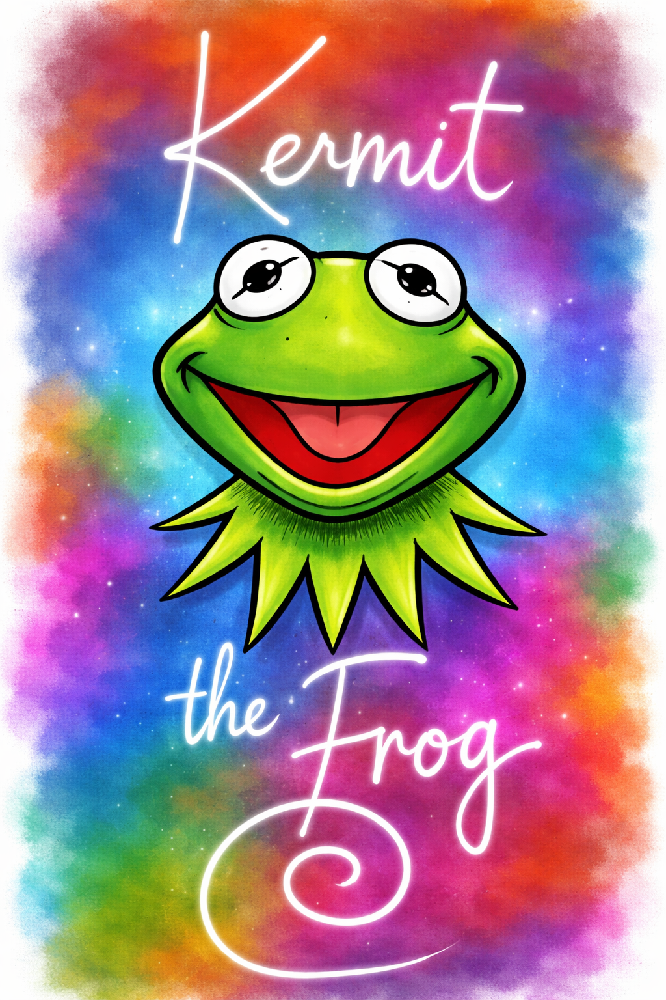

Why Kermit Should Be Banned
Kermit has become way too popular in pop culture, media, and on stage. This site lays out the argument for why his spotlight needs to come to an end.
See the ReasonsPurpose & Main Idea
This website is made to announce and prove that Kermit the Frog should be banned because of his habit of taking the stage for himself.
The main idea is that Kermit has become too popular in pop culture and media, and the reasons and evidence for that argument continue on the next pages.